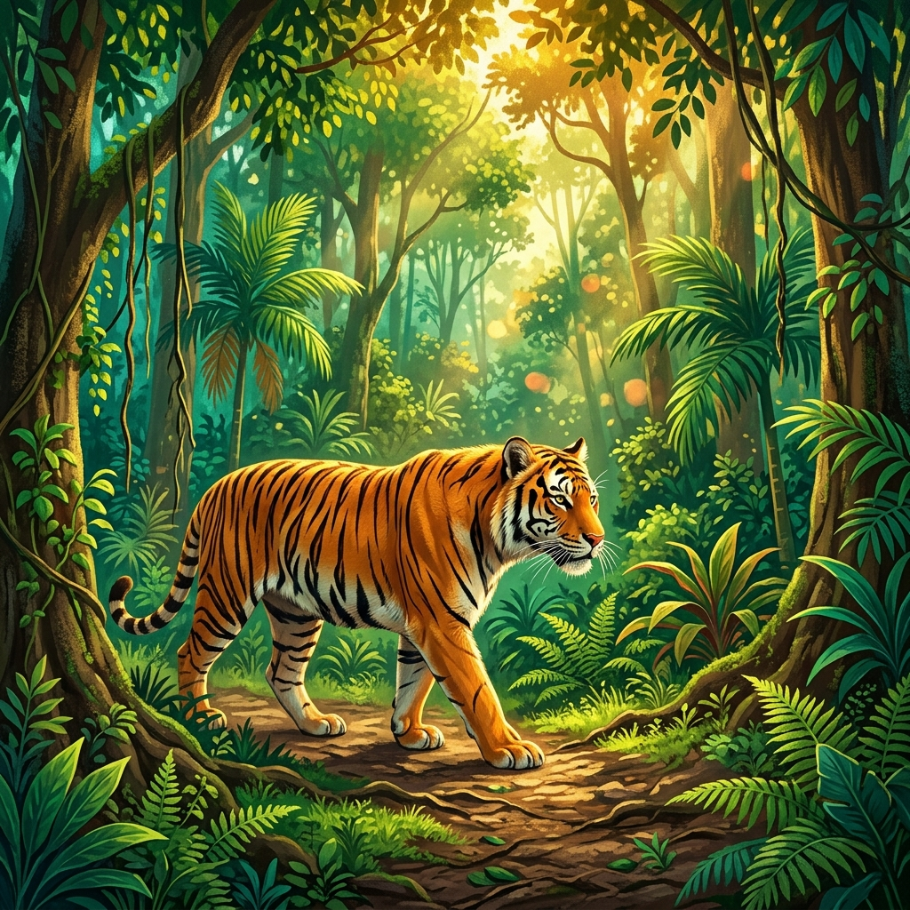

Places to Visit
🌀 Spin the 3D Explorer
Drag the wheel, or tap Surprise Me to land on a random place in Sathy — in 3D.
Step into misty ghats, tiger trails, riverside escapes, and timeless temple traditions that make Sathyamangalam unforgettable.
Plan Your Escape27 hairpin bends carry the Dhimbam Ghat road from the plains up into the misty Western Ghats.
Sathyamangalam (colloquially Sathy) has deep historical roots as a prominent ancient trade route connecting the Mysore Plateau with the Tamil plains. Once a strategic stronghold for rulers like Tipu Sultan, its modern culture is deeply intertwined with the highly revered Bannari Amman Temple, uniting hundreds of thousands of people during the massive annual fire-walking festival.
As the largest wildlife sanctuary in Tamil Nadu and a designated Tiger Reserve, Sathy forms a critical ecological corridor in the Nilgiri Biosphere Reserve. Its incredibly diverse landscape—ranging from dry deciduous to dense tropical evergreen forests—is a safe haven for Bengal tigers, large herds of Asian elephants, Indian gaurs, and elusive leopards.
Situated elegantly on the banks of the perennial Bhavani River and cradled by the rugged Eastern and Western Ghats, the town features a dramatic, undulating landscape. The legendary Dhimbam Ghats offer 27 breathtaking hairpin bends. The region's climate is beautifully moderated by the hills, becoming famously misty, cool, and lush green during the monsoons.
Sq Km Forest Area
Hairpin Bends
Majestic River

Drag the wheel, or tap Surprise Me to land on a random place in Sathy — in 3D.
From the misty ghats to the bustling town center, discover the heart of Sathyamangalam in one vibrant view.
Cloud-kissed hills, full rivers, and the lushest green views.
Cool air, clear skies, and perfect weather for exploring.
Bright mornings, scenic drives, and long golden evenings.
“The mix of forests, river views, and temple energy made it feel like a complete getaway.”
— A weekend explorer
From dawn mist rolling over the ghats to evening temple lights and riverside calm, Sathyamangalam rewards slow travel with unforgettable moments.
Discover MoreBuild your own Sathy itinerary — add places while you browse.